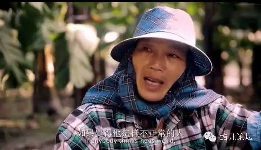
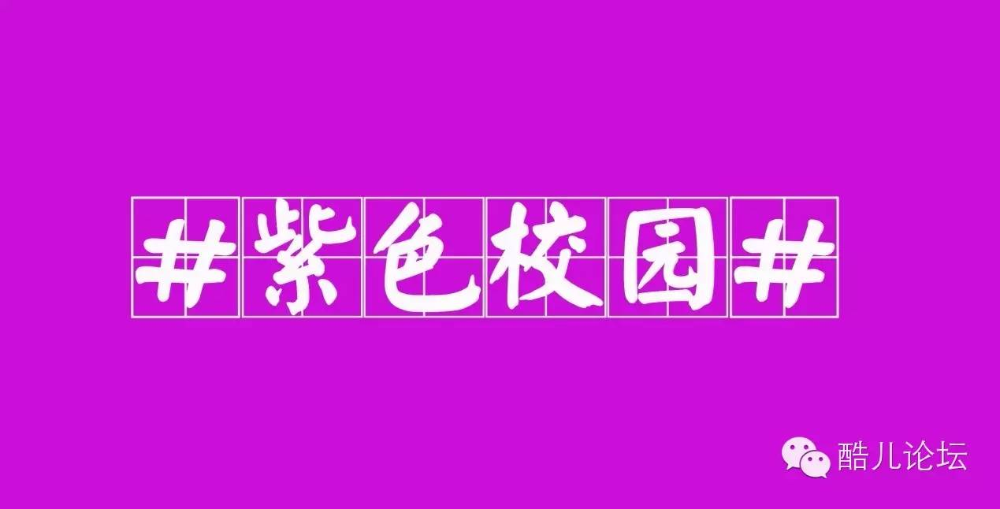
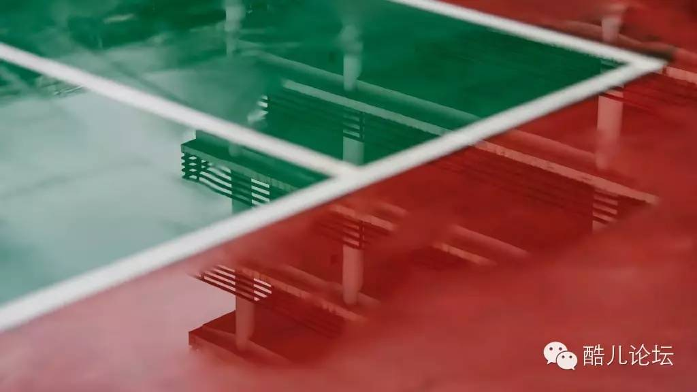
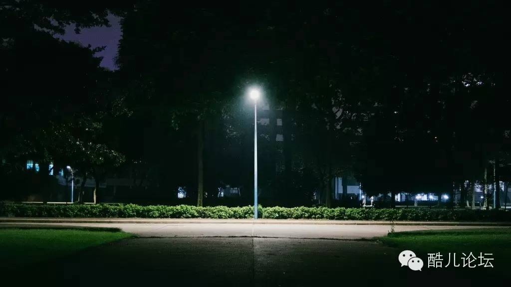
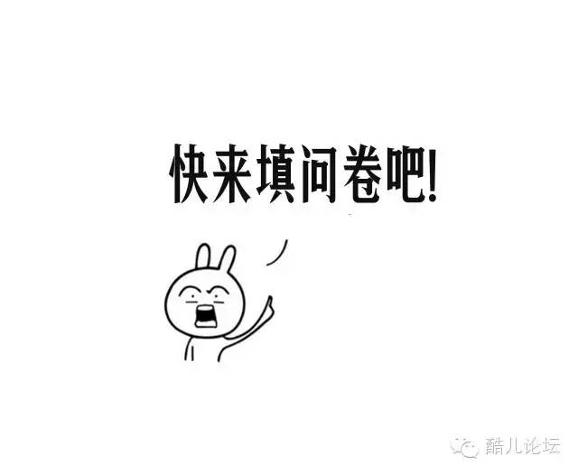
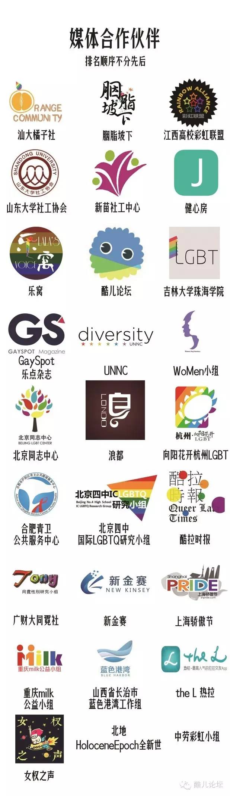

调查 | 性少数校园环境问卷调查
你听说过玫瑰少年叶永鋕的故事吗？

在2000年，台湾发生了一起校园命案，就读于屏东高树国中三年级的学生叶永鋕，在该年4月间早上的某堂课中，像往常一样，他在下课前提早5分钟离开教室去上厕所，但一直没有返回教室，后来他被发现倒卧在厕所的血泊中，送医后于隔日凌晨去世。
2006年，台湾性别平等教育协会出版《拥抱玫瑰少年》以记录叶永鋕事件，并藉此探讨其性别教育意涵。教育部则于2007年拍摄记录片《玫瑰少年》，2009年发行，送至全国高中作为教材。
性别平等教育其实不需要拿生命兑换
每天许多的男同性恋女同性恋双性恋跨性别间性人
都可能在校园中面临着欺凌和暴力
每天走进校园
都让他们感到担忧和恐惧
为了让他们感受到校园生活的安全
联合国开发计划署与教科文组织及亚洲同志项目联合发起 #紫色校园# 行动，鼓励学生、教师和学校以个人或集体的形式声援性和性别少数学生

我们不希望台湾玫瑰少年的事情再次发生
我们希望每个性少数的校园环境都是安全的
为了深入了解中国大陆高校、中学校园对待性少数学生的状况
我们需要你的帮助去填写这份问卷
只要是在校学生
不论年级、专业
不分性别、性倾向

让我们
听到
知道
了解到
中国大陆高校、中学校园对待性少数学生的状况是怎样

我们将以此作为依据
更积极地开展校园多元性别教育
创造友善、包容的校园环境
消除针对性少数学生群体的歧视与不平等现象

你的每一份填答
对于我们来说都是至关重要的
当然
如果能拉更多的小伙伴一起成为我们填写问卷大军中的一员
那真真是极好
长按二维码或复制问卷链接填写问卷
问卷链接：http://www.sojump.com/jq/6703190.aspx
